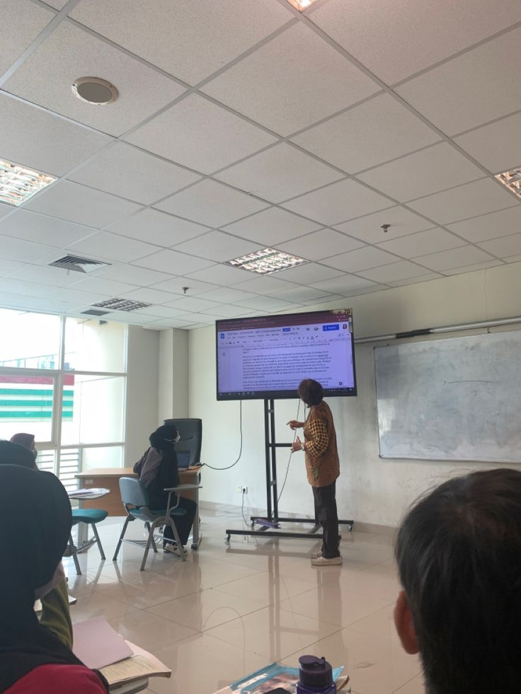

Já imaginou uma sala de aula onde todos, independentemente da visão, possam acompanhar o conteúdo no quadro com clareza? O Amplifíca é uma solução assistiva que facilita a inclusão e acessibilidade, ajudando estudantes com baixa visão a visualizar o conteúdo da lousa em tempo real, sem dificuldades.
Saiba maisAmplifíca é uma solução assistiva pensada para transformar o ambiente escolar em um espaço mais acessível, inclusivo e igualitário. Usando tecnologia simples e eficaz, ele permite que alunos com visão reduzida ou dificuldades de enxergar o quadro acompanhem as aulas com clareza em tempo real, sem depender exclusivamente da cópia do conteúdo ou da ajuda de colegas
Mais do que um recurso de apoio, o Amplifíca é um facilitador da aprendizagem e da autonomia. Ele permite:
O Amplífica oferece uma solução prática e acessível para tornar o ambiente escolar mais inclusivo. Com ele, qualquer sala de aula pode ser adaptada para estudantes com baixa visão ou dificuldades para enxergar a lousa. Utilizando apenas uma webcam, o sistema amplia o conteúdo em tempo real, transcreve o que está escrito e permite ajustes.
Diferente de outras ferramentas, o Amplífica é simples de instalar, fácil de usar e não exige investimentos altos em equipamentos. É a escolha ideal para escolas que valorizam a inclusão, professores que querem ensinar com mais equidade e alunos que merecem aprender com autonomia e clareza.
O Amplífica foi desenvolvido pela equipe Metamorfos, composta por estudantes do 3º ano do curso técnico de Informática para Internet da ETEC Darcy Pereira de Moraes.
Membros:
Durante o desenvolvimento, realizamos pesquisas de campo com professores e alunos para entender os desafios enfrentados por estudantes com dificuldades visuais ou que não conseguem enxergar bem a lousa. Com base nesses dados, criamos o Amplífica como uma solução prática, acessível e voltada à inclusão educacional.
O Amplífica usa uma webcam para capturar a lousa em tempo real. Ele aplica zoom digital na imagem e uma IA faz a transcrição automática do que está escrito. O conteúdo pode ser ajustado visualmente e exportado em formatos como PDF.
Apesar de ser simples, temos um tutorial para você!